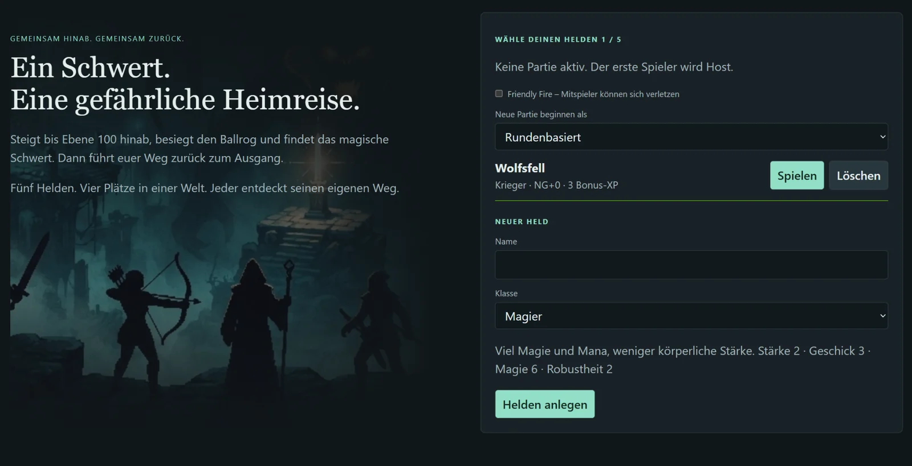
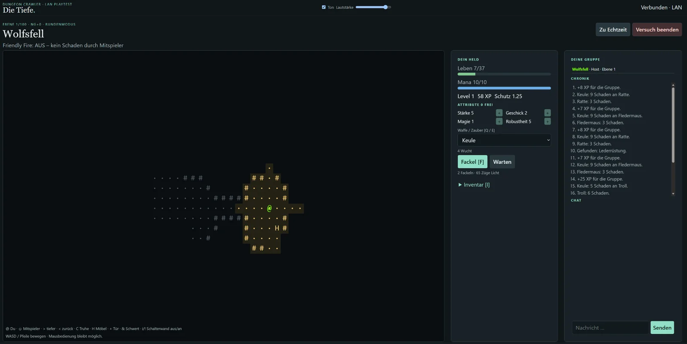

PROJEKT 02 / Spiel · Entdeckung
Die Tiefe
Ein Name. Viel Raum darunter.

Hinter dem Projekt.
Die Tiefe ist ein eigenes Dungeon-Crawler-Projekt. Key-Art, Charakterauswahl und eine Dungeon-Aufnahme geben Einblicke in die Spielwelt.
Merkmale & Einblicke.
- Eigenständiges Spielprojekt
- Eine eigene Spielwelt zum Erkunden
- Einblicke in Charakterauswahl und Dungeon als statische Screenshots
EINBLICKE INS PROJEKT
Momente aus dem Spiel.
Vom Nutzer bereitgestellte Projektaufnahmen. Alle gezeigten Oberflächen und Schaltflächen sind Teil statischer Bilder. Hier wird keine Anwendung gestartet; die Bilder belegen keinen aktuell verfügbaren Live-Zugang. Bild auswählen zum Vergrößern.



